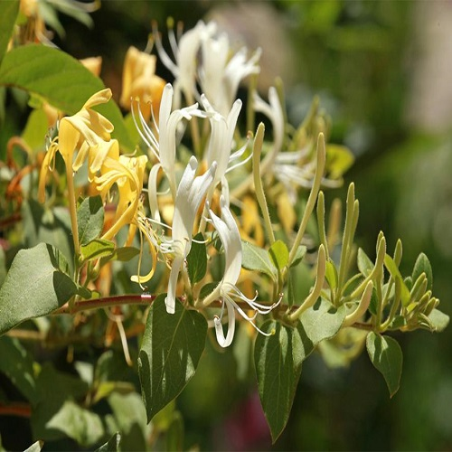

Les fleurs
8 fleurs à connaitre
-
Qu'est-ce que la camomille ?
Il existe un grand nombre d’espèces de camomille dont les périodes de floraison peuvent varier, même si globalement elle fleurit de juin à octobre.
Toutes les camomilles aiment les situations bien ensoleillées même si une situation légèrement ombragée suffit, surtout lorsqu’il fait chaud et sec.
Vous pourrez multiplier votre plante au printemps en divisant la touffe. La camomille ne requiert quasiment aucun entretien car c’est une plante facile qui a l’avantage de pousser sans soins particulier.
La suppression des fleurs fanées au fur et à mesure stimule l’apparition de nouvelles inflorescences mais ces gestes ne sont pas nécessaires.
En fin de saison, coupez les tiges au plus court, elle repartira de plus belle au printemps suivant. Vous pouvez tailler votre camomille en boule avant l’hiver pour qu’elle reprenne une forme arrondie au printemps.Quelles sont les vertus de la camomille sur la santé ?
La camomille est une plante aux bienfaits multiples. Elle peut être utilisée sous forme d’infusion, de pommade, de lotion, en inhalation ou encore en compresse. Appréciée pour ses vertus anti-inflammatoires, antibactériennes et cicatrisantes, elle va révolutionner votre quotidien.
La camomille soigne les troubles digestifs, en cas de gastro-entérite, d’inflammation de l’estomac, d’ulcères gastrique, de diarrhées, de ballonnements ou de flatulences, la camomille sera un remède très efficace. Pour soigner ces maux, il faut boire une infusion de camomille après chaque repas.
L’idéal est de laisser infuser la tisane avec un couvercle pour que les principes actifs ne s’évaporent pas. Dans le détail, la camomille combat efficacement les bactéries responsables des troubles digestifs tout en respectant la flore intestinale. Par ailleurs, elle contient des flavonoïdes qui ont une action anti-inflammatoire et antispasmodique. En cas d’acidité gastrique, la camomille viendra apaiser les intestins.
La camomille combat l’anxiété, La camomille permet aussi de lutter contre le stress et l’anxiété. Pour cela, il suffit de diluer quelques gouttes d’huile essentielle de camomille romaine dans son bain et de s’y prélasser de longues minutes.
Si vous avez des difficultés à trouver le sommeil, appliquez une goutte de cette huile sous la plante de chaque pied ou le long de la colonne vertébrale avant de vous coucher. En cas de dépression, de crise de nerfs, de surmenage ou de traumatisme émotionnel, une simple olfaction de cette huile pourrait s’avérer apaisante.
Avant de vous lancer dans ces expériences, pensez malgré tout à demander conseil à votre pharmacien ou médecin traitant. L’abus d’huiles essentielles peut en effet être dangereux pour la santé. Il ne faut pas dépasser certaines doses et ne pas l’utiliser dans certaines conditions (grossesse, allaitement…).
Enfin, la camomille peut s’avérer efficace contre les maux de gorge. C’est encore grâce à ses vertus anti-inflammatoires que la camomille peut apaiser efficacement les gorges douloureuses. Vous pouvez boire des infusions ou faire des inhalations de camomille avec une infusion très chaude. Vous pouvez aussi faire des gargarismes avec des tisanes de camomille. Les vertus antibactériennes de la camomille permettront par ailleurs de tuer les mauvaises bactéries à l’origine de ces douleurs.
Avant l’hiver, la camomille peut être un excellent préventif. Buvez une infusion quotidienne de camomille et vous passerez à côté d’un certain nombre d’infections. -
Qu'est-ce que la passiflore ?
La passiflore ou ‘fleur de la Passion’ est une fleur dans la démesure : des étamines et un pistil énormes, de la fleur on ne voit qu’eux ! Et c’est ce qui rend cette liane si originale et unique ! En extérieur, elle sera palissée contre un mur ou grimpera le long d’une pergola.
En intérieur, elle pourra créer une séparation végétale entre deux pièces, plantée en bac. Cette grimpante est à palisser en sujet isolé sur un mur ou à faire grimper sur une pergola ou le long d’une rampe, elle tiendra en bac et en pot avec un support. Et en intérieur car elle aime la chaleur, elle pourra se révéler une très belle séparation végétale entre deux pièces, du moment qu’elle ait du soleil.
Elle se sentira comme chez elle sous une serre ou une véranda, où elle peut atteindre jusqu’à 5 m en hauteur. Elle sera plantée en extérieur dans les régions à climat doux. Des espèces, comme la passiflore bleue Passiflora caerulea, peuvent pousser en extérieur dans la région parisienne, le sud-est, le sud-ouest, le littoral atlantique et la Bretagne. Ailleurs, on la cultivera en pot, ce qui permettra de la mettre à l’abri dès les premiers froids.
Sinon, voile d’hivernage et paillage au pied s’imposent. La passiflore est remarquable par la taille des éléments de sa fleur : étamines, pistil et stigmate. Qui plus est, les horticulteurs ont étendu la panoplie de couleurs de ses fleurs et de ses filaments en anneau, qui portent le nom de ‘corona’ : pourpre, rouge, rose, bleu, mauve, violet et blanc. La floraison s’effectue de mai aux gelées. Les fleurs ont la particularité de s’ouvrir le matin vers dix heures et de se fermer en fin d’après-midi.
Elles ne fleurissent qu’une journée mais les nombreux boutons assurent une floraison continue. De plus, chez certaines variétés telle ‘Impératrice Eugénie’, les fleurs dégagent un agréable parfum. Les fruits de la Passion charnus jaune à orangé sont comestibles et apparaissent en automne. Seul le Midi pourra profiter des fruits de Passiflora edulis, plantée en extérieur. Il est important de respecter un espace de dix cm entre le mur et le treillage pour la circulation de l’air. La passiflore pousse dans un sol riche, bien drainé, ordinaire voire argileux.
La plantation s’effectue au printemps, vers mars-avril dans les régions douces (en mai ailleurs). On aménage au fond du trou de plantation une couche de drainage, recouverte d’un mélange de terreau et de terre de bruyère. Pour aider la plante à s’installer, on incline la motte vers son futur support, on arrose un peu et on paille sa surface sur une épaisseur de cinq à dix cm. On suit sa croissance en la palissant. En pot, le mélange de terre idéal est, à parts égales, de la terre de bruyère, de la terre franche et du terreau.Quelles sont les vertus de la passiflore sur la santé ?
Originaire d'Amazonie, la passiflore favorise un sommeil réparateur. Elle agit directement sur le système nerveux central, ce qui permet d’être plus relaxé et ainsi d’aider à maintenir un sommeil de qualité et cela sans accoutumance.
En effet, divers composés de la passiflore ont le même effet que le le GABA (un neurotransmetteur apaisant) sur les régions du cerveau affectées. Partant de là, la fleur de la passion peut calmer le système nerveux, en déclenchant la relaxation pour un sommeil paisible.
Contenant divers flavonoïdes (qui sont des antioxydants bien connus et concentrés dans les feuilles), la passiflore peut également avoir des effets anxiolytiques. La passiflore sert aussi de cataplasmes, les Amérindiens utilisaient des feuilles de passiflore pour soigner les ecchymoses et les blessures.
En jus du fruit, les Amérindiens y avaient recours pour soulager les douleurs oculaires. Plus encore, ils broyaient les feuilles du « maracuya » et, s’en servaient pour soulager les éruptions cutanées, les brûlures, et même soigner les hémorroïdes. Antispasmodique, la fleur de la passion sert également à soigner les troubles de la ménopause, les névralgies, l’épilepsie et même, l’asthme spasmodique.
On a récemment découvert ses propriétés antitussives qui certifieraient son usage traditionnel pour soulager l’asthme. -
Qu'est-ce que la calendula ?
Le Calendula Officinalis (de son nom botanique) ou Souci, est une plante appartenant à la famille des Astéracées qui produit des fleurs jaunes à orangées. Le Calendula fleurit au printemps et en général, jusqu'en décembre. Il se cultive assez facilement dans les régions Méditerranéennes, croissant même sans avoir été semé, grâce à l'action du vent. Cette plante est autant appréciée pour ses qualités ornementales que thérapeutiques.
Le Souci doit son nom du mot latin "solsequia", signifiant "qui suit le soleil". En effet, les fleurs de Calendula s'ouvrent au lever du Soleil et se referment au coucher. Le calendula est notamment une plante servant à la préparation de teintures et de colorants : la décoction des fleurs fournit une couleur jaune crème, non toxique, utilisée en tant que colorant alimentaire pour foncer le beurre trop clair par exemple.
Egalement, dans certaines régions du Royaume-Uni et d'Allemagne, le Calendula était utilisé pour blondir les cheveux.Quelles sont les vertus de la calendula sur la santé ?
Pour mieux comprendre ses vertus, attardons-nous sur sa composition. Les capitules floraux de cette plante contiennent : Des carotènes antioxydants, pouvant être utilisés comme provitamine A. Ce sont des agents filtrants contre le soleil.
Des flavonoïdes aussiantioxydants; ils sont veinotoniques et inhibent certaines enzymes in vitro. Des esters faradiols qui sont surtoutanti-inflammatoires et anti-oedémateux. De l'acide salicylique, excellent analgésique, en petite quantité.
Des huiles essentielles en petite quantité, qui sont antibactériennes, stimulantes de l'activité cellulaire. Le Calendula possède, de par ses composants et leur interactions, plusieurs propriétés faisant de lui, autant que l'Arnica ou leMillepertuis, un must-have de votre trousse à pharmacie.
Il constitue un anti-inflammatoire puissant du fait de sa teneur en esters faradiols. Il est également anti-oedémateux et est capable de diminuer significativement œdème et congestion dûs à une brûlure. La concentration en flavonoïdes du Calendula fait de lui un bon antioxydant, protégeant de la dégénérescence cellulaire et captant les radicaux libres à l'origine du vieillissement cutané prématuré.
Il permet également de lutter contre d'autres systèmes oxydatifs. La présence de flavonoïdes et d'acide salicylique font du Calendula un bon cicatrisant, puisque cela lui permet de favoriser la régénération du tissu cutané altéré. Antiseptique et antibactérien grâce aux huiles essentielles qu'il contient, le Calendula est particulièrement efficace contre staphylocoques et trichomonas.
C'est aussi un adoucissant et un assouplissant qui rend votre peau plus douce et plus élastique. -
Qu'est-ce que le jasmin ?
Le jasmin est un grand arbuste ou une grimpante ligneuse, à feuillage caduc ou persistant et aux fleurs blanches, jaunes, plus rarement rouge rosé. Connu pour son parfum, le jasmin est planté de préférence près des lieux de passage pour profiter au maximum de sa délicieuse fragrance entêtante. En cascade de fleurs au balcon, dans un bac sur une terrasse, grimpé sur une tonnelle ou une pergola, le jasmin trouve facilement sa place au jardin et ailleurs.
Sa hauteur à maturité est très variable selon l’espèce : de 30 cm à 3 m. Le feuillage panaché de certaines variétés le rend aussi décoratif que ses fleurs. Le jasmin est une plante tropicale ou subtropicale. Il est donc nécessaire de le protéger des hivers très froids en recouvrant d’un voile ses parties aériennes et d’un paillage son pied. Le jasmin d’hiver, plus rustique que son cousin le jasmin blanc, supporte des températures négatives atteignant -15°C.
Cette plante fleurit mieux au soleil et sous une bonne chaleur. Le jasmin d’hiver supporte toutes les expositions, même un mur orienté nord. Dans l’idéal, le jasmin réclame un sol profond, fertile, frais et bien drainé. Certaines espèces, comme le jasmin d’hiver ne sont pas aussi exigeantes et poussent même dans les sols pauvres, caillouteux et légèrement calcaires. Lors de la plantation, la motte doit être inclinée pour guider la tige vers son futur support, et un arrosage généreux juste après sa mise en terre est le bienvenu.Quelles sont les vertus du jasmin sur la santé ?
Autrement appelé jasmin officinal, le jasmin blanc est un allié de choix pour notre santé. Consommé sous forme de thé, de tisane ou bien d’huile essentielle en massage sur la peau par exemple, le jasmin a de nombreuses vertus pour notre bien-être.
Sous forme d’huile essentielle, on peut en faire usage pour son effet antioxydant, antirides ou bien même antibactérienne (pour les peaux à tendance acnéiques), soulager les crampes grâce aux massages fortifier et nourrir les ongles.
relaxer, calmer les crises d’angoisse et les quintes de toux (aromathérapie). Sous forme de thé (souvent mélangé au thé vert) ou de tisane, on peut en faire usage pour protéger la peau et l’organisme contre le vieillissement grâce à ses vertus antioxydantes
faciliter le drainage et la circulation sanguine, diminuer la tension artérielle. Ses effets calmants et sédatifs permettent de lutter contre les troubles du sommeil, mais aussi contre les migraines -

Qu'est-ce que le chevrefeuille ?
Le chèvrefeuille est apprécié au jardin : grimpé sur une tonnelle ou palissé contre un mur. Il existe également des espèces arbustives qui formeront de belles haies, massifs et bordures. Ses feuilles apparaissant très tôt dans l’année (dès le mois de mars), le chèvrefeuille sera le premier à donner une touche de verdure au jardin. Ce que l’on aime aussi chez lui, en dehors de ses belles fleurs, c’est sa robustesse, sa longévité et sa résistance aux maladies.
Souvent très parfumées, ses fleurs tubulaires produisent un nectar qui attire insectes et oiseaux. Elles sont généralement jaune crème teinté de rouge pourpre, comme chez les variétés ‘Goldflame’, ‘Mandarin’, et ‘Dropmore Scarlet’. Les feuilles aussi ont de belles couleurs : pourpre virant au vert-bleuté ; elles sont persistantes, comme chez la variété ‘Hall’s Prolific’, semi-persistantes ou caduques.Le chèvrefeuille apprécie les climats tempérés. En France, il est commun dans toutes les régions où il pousse à l’état naturel dans les bois et les haies.
Au soleil ou à mi-ombre, il se plaira aussi dans n’importe quel type de sol fertile et bien drainé. Mais il ne supporte pas le soleil brûlant ni les grands froids et certaines espèces n’endurent pas des températures inférieures à 5°C.Quelles sont les vertus du chevrefeuille sur la santé ?
Tant l’écorce que les feuilles de chèvrefeuille ont de nombreuses propriétés, mais leurs baies sont toxiques et ne doivent pas être utilisées. Le chèvrefeuille offre de nombreux bienfaits pour notre corps qui permettent de lutter contre diverses affections telles que l’asthme, le rhume, la grippe, les problèmes de peau ou la rétention d’eau, mais ce ne sont pas toutes ses propriétés. La plante de chèvrefeuille a des propriétés naturelles qui sont utilisées pour diverses maladies. Bon nombre d’entre elles concernent le système respiratoire.
Ceci est également dû à la richesse en ingrédients actifs tels que Carvacrol (un composé à effet analgésique et antioxydant), Géraniol (sédatif et antibactérien), Acide chlorogénique (antioxydant et anti-inflammatoire), Lutéoline (antiallergique et antibactérien).
Tous ces composants ont également des propriétés anti-inflammatoires, ce qui aide à lutter contre les problèmes respiratoires susmentionnés. Les autres propriétés du chèvrefeuille sont hépatoprotectrices, c’est-à-dire qu’il possède une série de qualités qui protègent des organes comme le foie en améliorant le fonctionnement des cellules du foie. Par ailleurs, il faut mentionner la fonction diurétique du chèvrefeuille. Cette caractéristique permet d’éliminer les fluides en excès dans le corps. Le travail se fait grâce à sa richesse en calcium, magnésium, potassium, lutéoline et acide chlorogénique. -

Qu'est-ce que la lavande ?
La lavande pousse partout en France et dans les pays dont le climat est proche à condition de bénéficier d’un maximum d’ensoleillement. Il est recommandé de planter à l’automne, mais vous pourrez sans problème la planter au printemps.
Réservez lui un endroit bien ensoleillé et un sol bien drainé. Si votre terre est très argileuse, mélangez là avec du sable pour l’alléger.Il arrive parfois que l’on voit des lavandes qui meurent après quelques semaines car le sol est trop humide c’est pourquoi il est impératif d’avoir une terre très bien drainée. La taille de la lavande est possible mais ne doit être faite que sur du bois comportant encore du feuillage.
Si vous taillez sur du bois sec, ça ne repoussera pas… A la fin de l’hiver, taillez à votre guise en respectant la forme arrondie de la plante. Évitez néanmoins de vous attaquer au vieux bois car il développe très peu de jeunes pousses. Privilégiez donc une taille du bois encore tendre plutôt que du bois dur.
Si le climat de votre région est doux en hiver, vous pouvez aussi tailler votre lavande à l’automne. Après la floraison, coupez les hampes florales pour ne pas épuiser la lavande inutilement. Les fleurs de la lavande, une fois coupées constituent un excellent moyen d’embaumer le linge…Quelles sont les vertus de la lavande ?
La lavande a un léger effet narcotique (coumarine) : insomnie, hystérie, troubles nerveux, un effet anti-spasmodique, grâce aux esters que la plante contient. Elle aide en cas de digestion difficile liée au stress ou à la nervosité, ulcérations.
En cas de troubles respiratoires : rhume, asthme. Apaise en cas de vertiges, troubles cardio-vasculaires : calme un début d'angine de poitrine. Traitement des migraines et céphalées. Soulage certaines affections de la peau : eczéma, acné, brûlures légères, psoriasis, piqûres d'insectes.Cicatrise et assainit les plaies et les ulcères.
Douleurs articulaires : entorses, foulures, contusions et rhumatismes. Action antivenimeuse sur la morsure de vipère. -
Qu'est-ce que le pavot jaune ?
e Meconopsis cambrica ou pavot jaune des Pyrénées fait partie de la famille des pavots, dont il est proche notamment par ses fleurs typiques. Dans le genre Meconopsis, c’est l’un des rares à pousser en Europe et faire des fleurs jaunes. Ce genre, regroupe environ 45 espèces de plantes vivaces, annuelles ou bisannuelles, la plupart du temps monocarpiques.
La période de floraison de ce pavot jaune est impressionnante : déjà en fleur en avril (avec les bulbes, rhododendrons et autres), elle l’est encore en octobre voire en novembre lorsque les arbres sont rouges et perdent leurs feuilles.
Les feuilles sont composées, elliptiques à pennatiséquées, vert clair à l’avers (le dessus), plus bleuté au revers, toujours un peu poilues et mesurant entre 10 et 20 cm de long. La multiplication se fait évidemment par semis et on peut déconseiller les transplantations de pieds adultes dont on casse souvent la longue racine pivotante. Malgré tout, sa propension à se disperser,
vous dispensera de multiplication dès que quelques pieds seront établis dans votre jardin, et ce sera toujours une agréable surprise, au printemps, de voir apparaître dans un coin inattendu les jolies fleurs jaunes d’un Meconopsis cambrica.Quelles sont les vertus du pavot jaune ?
L’utilisation de pavot de Californie fut diverse et variée. Les Amérindiens mangeaient les feuilles bouillies et les faisaient rôtir sur des pierres chaudes pour favoriser le sommeil des enfants ou faire face aux douleurs dentaires et les coliques qu’ils pouvaient ressentir dès leur plus jeune âge. Ils l’utilisaient aussi de manière un peu plus originale en fumant les feuilles et les pétales.
Le pavot de Californie agit sur les différentes phases du sommeil. Premièrement, il aide à trouver un sommeil plus rapide lors de la phase d’endormissement. Dans un second temps, il permet d’améliorer la qualité du sommeil. Outre ses qualités pour bien dormir, le pavot aide aussi à faire face au stress et contribue à la relaxation, en maintenant un relâchement physique et mental. -
Qu'est-ce que l'Echinacee ?
Echinacea (les échinacées, terme dérivé du grec echino, « épine », à cause du disque central « épineux » de la fleur) est un genre de plantes de la famille des Astéracées qui comprend 11 taxons (9 espèces et 2 sous-espèces) tous originaires d'Amérique du Nord. Trois espèces sont très connues pour leur réputation en herboristerie et leur usage ethnobotanique : Echinacea angustifolia, Echinacea purpurea et Echinacea pallida.
Le genre Echinacea regroupe des plantes d'environ 1 m de hauteur avec une fleur jaune, rose et quelquefois blanche. Le centre de la fleur est recouvert de pointes piquantes. Au printemps dans un lieu abrité et bien ensoleillé. L’échinacée réclame un sol plutôt riche et bien drainé car elle redoute qaund ses racines stagnent dans l’eau. Particulièrement résistant à la sécheresse, vous n’hésiterez donc pas à la placer dans un coin chaud et ensoleillé.
La multiplication par bouturage est très facile sur cette vivace. A effectuer au printemps ou à la fin de l’été. On peut également diviser la touffe au printemps ou à l’automne, c’est même recommandé tous les 3-4 ans pour régénérer la planteQuelles sont les vertus de l'echinacee ?
L’échinacée est une plante à qui on prête de nombreuses vertus et qui est aujourd’hui largement utilisée dans la composition de gélules pour la médecine naturelle. Sur l’échinacée, la racine autant que la partie aérienne, sont utilisées en médecine. On retient 3 variétés pour son utilisation thérapeutique, l’échinacea angustifolia, Echinacea pallida et Echinacea purpurea.
Elle améliore le système immunitaire en renforçant les défenses de notre corps. Elle traite les infections des voies respiratoires. L’echinacea aide à traiter des maladies comme le rhume, la grippe ou la pharyngite. Enfin, l’échinacée traite les infections urinaires.